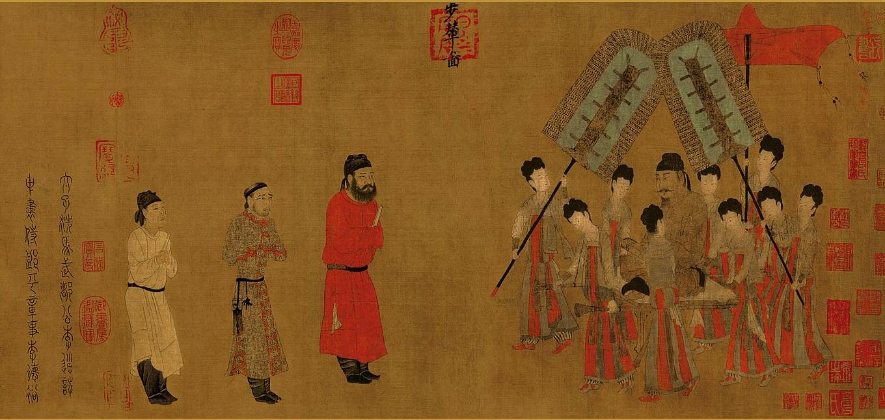

我覺得，大學這四年，需要學會的東西，不單單是知識，還有腦子。要有自己思考的腦子。我翻牆以後，也見過很多批判共產黨的東西，也見過很多反應激烈的文章。但是，我沒有相信，不是因為我支持共黨，而是因為我有腦子。
從小時候學習三顧茅廬開始，那個時候我就有一個很大的疑惑，天下都被分成這樣了，你劉備被劉彰和孫權夾成這樣，你不想辦法弄塊地方，不是等死的節奏嗎？為什麼還需要諸葛亮來點出這樣的三分天下呢？這應該是普通人都能夠看得出來的吧。
但是，那個時候的課本，老師，其他的學生，以及那個時候我最尊敬的父母，他們都認為是諸葛亮才看了出來，而普通人是看不出來的，所以才有了課本上的劉備「如魚得水」。那個時候，自己雖然有疑惑，但是也只能作罷。在全世界都說那是對的，就算他是錯的，他也必須是對的。這就是所謂的指鹿為馬，三人成虎吧。
後來，長大了，讀了大學的自己重新找回了腦子，回想起小的時候的這件事，感覺自己的初衷，不是錯的。
我不是史學家，我也不想去研究那麼深奧的歷史和哲學。不過，稍微讀了一點三國志，知道了三國演義只是演藝，三國志才是正史。而三國志中，所謂的「火燒博望坡」是劉備在認識諸葛亮十年前的傑作，而三國演義硬硬是把它加到了諸葛亮的頭上。為了好看吧。就這樣，就憑這一個列子，我可以很肯定，三分天下被吹得那麼神，估計，也僅僅只是為了演藝吧。
而中國人總是喜歡把人聖化和神化，就像是董存瑞，孫中山，甚至是那個不知道有沒有存在過的雷鋒。他們明明沒有那麼多的能力的，卻為了成為廣大人民的信仰而存在而被賦予了那麼多本身沒有的能力。想必諸葛亮也是這樣的「下場」，也許只是比平常人稍微聰明一點，提出了幾個好點子，卻為了成為人民的信仰而被「歷史」賦予更多的能力。這是可喜還是可悲呢？
雷鋒一直是我們這一代人從小學開始就知道的「好榜樣」。不過，它的存在與否對我來說，並不影響我的生活，所以我也沒有在意。我開始注意到這件事，是在大一的政治課上。
瀨安俊是我的政治老師，那一節課，他給我們提出了一個問題，感覺雷鋒是存在的人請舉手。覺得雷鋒不存在的人，請舉手。
覺得雷鋒存在的人，舉出了理由，是雷峰他每次做一件好事都會把事情記下來。而覺得雷鋒是虛構的人，也提出了自己的理由，是中國政府為了給人民一個信仰而偽造出來的聖人。比如說為什麼雷鋒能在那個中國如此貧窮的年代拍那麼多的照片，而且還有自己的自行車。
老師沒有跟我們明確的表明他的想法，只是給我們說了一個故事。雷鋒日記中有一次寫道，一個下雨天，雷鋒遇到了一個抱著孩子的主婦，於是，雷鋒走上去，把自己的傘交給了主婦，從主婦懷裡接過孩子。配合上老師生動的肢體動作，那個時候，我們全班大笑。
就如我開始寫的，雷鋒存不存在，對我來說關係不大。雷鋒從來都不是我的學習目標，我做好事都是我父母的教育，和那個叫做雷鋒的傢伙沒有任何的關係。但讓我想想雷鋒這件事，我覺得瀨老師的想法是對的。其實，雷鋒存不存在都無所謂，但是，自己要有腦子，要有判斷事物，明辨是非的能力。
再寫一個事件。這個事件的開始，是我在小學課本上看到的一張閻立本的畫，是下面這個樣子的，叫步輦圖。那個時候被刊登在了藝術課本上，好像還是某一章節封面的背景。老師那個時候在課上也跟我們講了一下這幅畫，用一個字來講，就是「好」。

然而，我不說別的，就這幅畫，左邊的那幾個東西，畫得也可以說是人？我雖然沒有系統的學習過藝術，但是欣賞藝術的眼光還是有的。你這既然不是畢加索的抽象派畫風，你好歹把個人給畫得像個人樣吧？連站都站不直，還一個猴子臉，腦袋的比例也成問題。而右邊的那個皇帝，估計是從哪個歷代皇帝相冊裡面臨摹的吧？
那個時候雖然這樣想，但是也不敢說，於是我把這件事記在了心裡。一直到了大學我選修的美術課上。
老師先是給我們看了一下這幅畫，然後放了一段點評這幅畫的視頻，那個視頻裡面大概是這樣說的，坐在XXX上的XXX神情栩栩如生，拜見XXX的XXX和XXX以及XXX也畫得很好，這好想是中央拍的視頻。老師問我們，你們覺得這幅畫怎麼樣？
那個時候，我的想法，和小學的時後的我的想法，不一樣。既然那麼多人都說好，而且還有視頻的點評，那肯定是一部好作品啊。
但是，老師最後給出的回答，然我嚇了一跳。這個，怎麼可能是閻立本的真跡？這只不過是哪個小學生的塗鴉罷了！
當時我就傻了。那個時候聽到這個消息的自己的反應是，怎麼可能？這麼多人都說了是好的，怎麼可能是壞的？
後來，老師慢慢地點出了裡面的敗筆，缺陷，和我小學時候差評的想法差不多，才把我從那個妄想的世界中拉了出來。
事後，回想起還在上小學的自己，仔細想想，這些年，自己學了不少考試的技巧，解題的套路，卻忘記了自己開始的初衷。真是可悲！
離我接受政治老師的淨化和美術老師的洗禮，已經過去近一年了。這一年，我也接觸了不少的東西，也看過了不少的東西。但是，我不會再盲目的跟隨著大眾網友的眼光去看待那些事物了，我有了自己的腦子。每每看到那些「錯誤的言論」在互聯網上被廣大的網友轉播，我真的覺得很可悲。為什麼國人就不能有腦子呢？那些無聊的事情為什麼會被轉播成這樣然後留下這些言論呢？我不知道，但是覺得很可悲。這些明明不值一提的小事，卻為什麼那麼火呢？為什麼這些明顯的錯誤，都沒有人能夠站出來指出呢？
我真的覺得很可悲。現在寫下這篇文章，隱隱感覺到了魯迅先生當年棄醫從文時心中的悲憤之情。而那個被人稱為「聖」的魯迅大師，雖然不知道是不是刻意的聖化。但連他的文章都沒有喚醒中國人的內心，我這樣書生的拙劣文筆又能夠改變得了什麼呢？
能的。我寫下這篇文章，並不指望自己的文章能夠喚醒多少人愚鈍，也不指望有多少人能夠受到啟發。但是，至少有一點我是可以肯定的，就是，我記下現在自己的模樣，能夠給以後的自己留下一面參照的鏡子。
十年之後的我，你看到這篇文章時有什麼樣的感受呢？那個時候的你，是什麼樣子呢？還記不記得小學那時後勇敢質疑的自己和現在被淨化的我的內心呢？
十年後の私、君はどんな様子ですか？この文書を見たの時、どんな思うですか？
2017.06.19